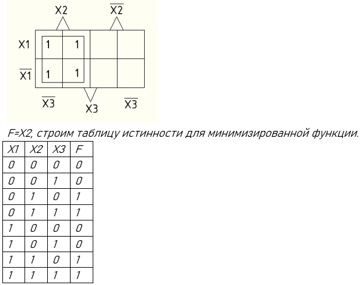
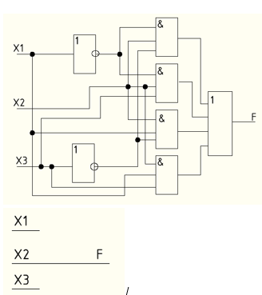
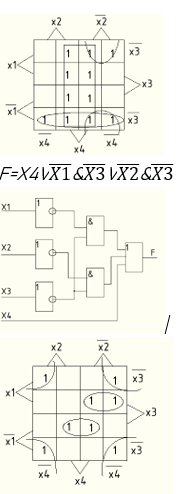

Тема 1.4. Минимизация логической формулы методом Карно-Вейча.
Минимизация целесообразна, так как логическая схема начальной формулы больше логической схемы конечной формулы.
1. Минимизация логической формулы от трех аргументов методом Карно-Вейча.
2. Минимизация логической формулы от четырех аргументов методом Карно-Вейча.
1. Минимизация логической формулы от трех аргументов методом Карно-Вейча
Минимизация осуществляется по следующим шагам:
1. Заполняется таблица истинности.
2. По таблице истинности записываем совершенную дизъюнктивную нормальную форму(СДНФ)
3.Используя совершенную дизъюнктивную нормальную форму(СДНФ) заполняем карту Карно (сколько слагаемых в СДНФ, столько единиц будет в карте Карно) по определенным адресам.
4. В картах Карно осуществляем склейку (объединение единиц в группы)
Правила склейки:
За минимальное число склеек необходимо склеить все единицы (без пустых клеточек или ноликов).
Чем больше в склейке клеток, тем лучше.
Объединять можно по одной, две, четыре, восемь, шестнадцать и так далее (2n).
Объединять клетки можно по горизонтали, вертикали, квадратом, прямоугольником, по краям, по углам, но не по диагонали.
Склейки могут пересекаться.
5. Записываем результирующую минимизированную формулу по правилам:
Сколько склеек в карте Карно, столько и слагаемых в формуле.
Каждая склейка по очереди проецируется на каждый аргумент.
Если проекция склейки захватывает область как прямого аргумента, так и инверсного, (одного и того же), то они взаимно уничтожаются и в формулу не записываются.
Если проекция склейки захватывает область:
Прямого аргумента, то он так и записывается без инверсии в формулу.
Инверсного аргумента, то он записывается с инверсией в формулу.
Каждый аргумент является сомножителем в колбаске.
6. По минимизированной формуле строим схему результата и проверяем минимизацию на правильность и целесообразность.
Пример 1:
F1=(X1) ̅&X2&(X3) ̅V(X1) ̅&X2&X3VX1&X2&(X3) ̅VX1&X2&X3
 В карте Карно для трех аргументов восемь клеток, для двух аргументов четыре клетки, для четырех аргументов шестнадцать клеток.
В карте Карно для трех аргументов восемь клеток, для двух аргументов четыре клетки, для четырех аргументов шестнадцать клеток.

Так как таблицы истинности совпали, то минимизация верна.

Минимизация целесообразна, так как конечная схема меньше начальной.
2. Минимизация логической формулы от четырех аргументов методом Карно-Вейча.
